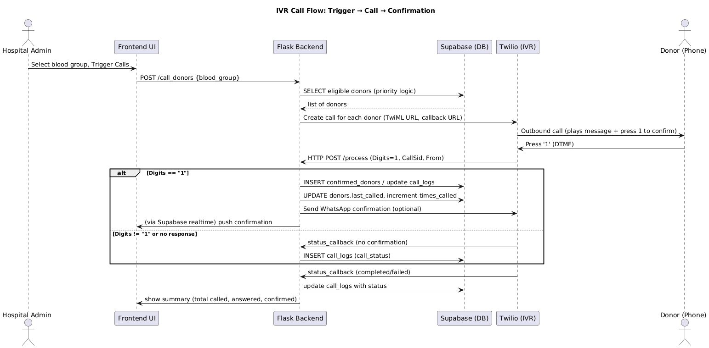
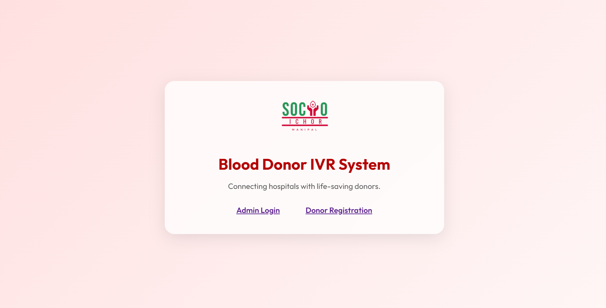
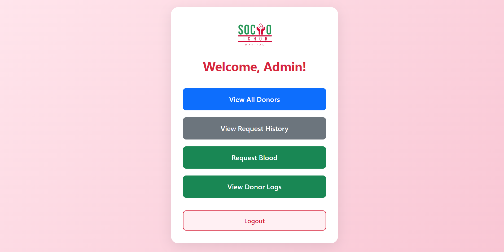
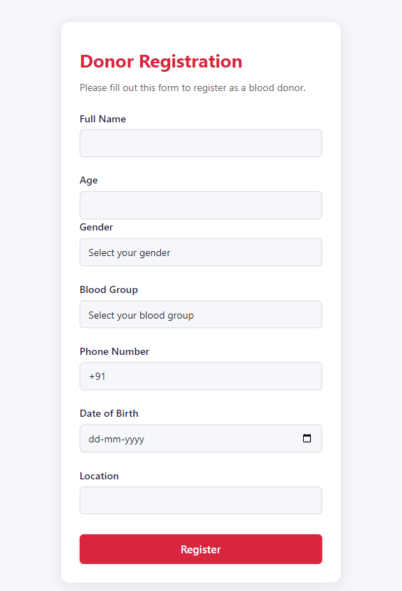
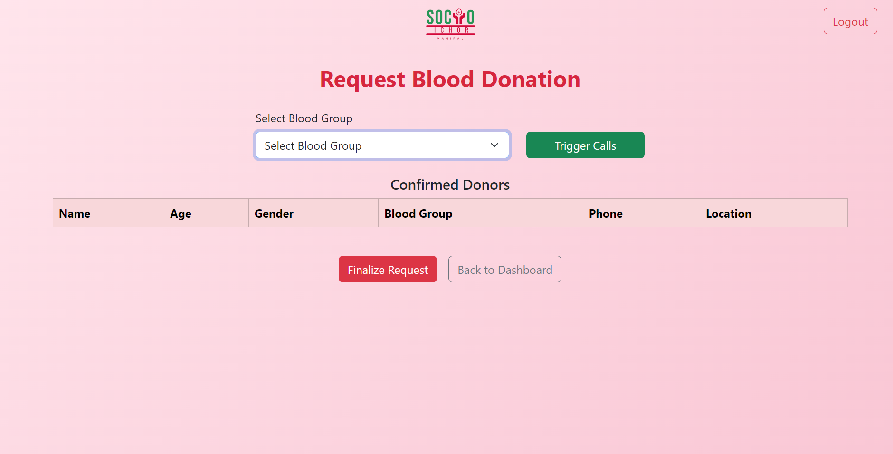
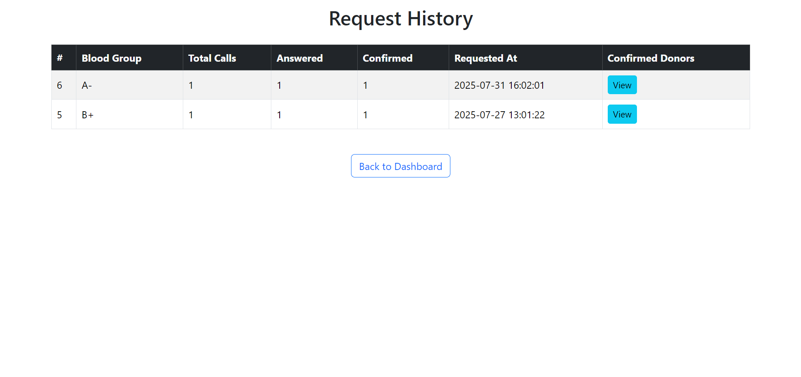

Abstract
During emergency medical situations, especially in rural and urban hospitals, finding blood donors of a specific blood group can be time-critical. This project automates the donor calling process using an IVR (Interactive Voice Response) system powered by Twilio and integrates a confirmation mechanism for donors via keypad input. The system also stores donor details and call history using Supabase, enabling quick and reliable communication during emergencies.
Objective
- Automate donor notification to reduce response time.
- Allow donors to confirm availability by pressing a digit on their phone.
- Provide hospitals with a dashboard to track call status, confirmations, and donor history.
- Maintain a centralized donor database for quick access.
Features
Literature Review
- Asterisk Open Source PBX: Widely used for automated call handling and IVR in both corporate and healthcare sectors. Read more
- Twilio IVR for Nonprofits: Used by NGOs to coordinate volunteers and blood donors during crises. Read more
- NHS Blood and Transplant UK: Utilizes automated calling & SMS to reach registered donors quickly. Read more
System Design & Architecture
| Component | Technology Used | Reason |
|---|---|---|
| Backend | Flask (Python) | Lightweight, easy to integrate with APIs |
| Database | Supabase | Serverless, real-time updates |
| IVR & Calls | Twilio | Reliable and easy to integrate with Python |
| Frontend UI | Bootstrap | Quick UI development, responsive |
| Hosting | Railway | Simple deployment for Flask apps |
System Architecture Diagram

Sequence Diagram
Screenshots
Login
Dashboard
Donor form
Main Calling Dashboard
View Previous Request
Results & Future Work
Current State
Prototype implementation present. No production testing done yet.
Future Work
- Add retries & backoff logic for failed calls.
- Add multilingual IVR messages.
- Add robust logging, monitoring, and unit/integration tests.
- Build an official deploy pipeline and secrets management.
Disclaimer
A working version of this product is ready and is currently in the process of being deployed as an integrated package alongside other systems. No claims are being made at this stage, as the system has not yet been tested in real-world scenarios and may still have certain issues. The final product will not be a standalone solution but will be incorporated as part of a larger website with additional features.